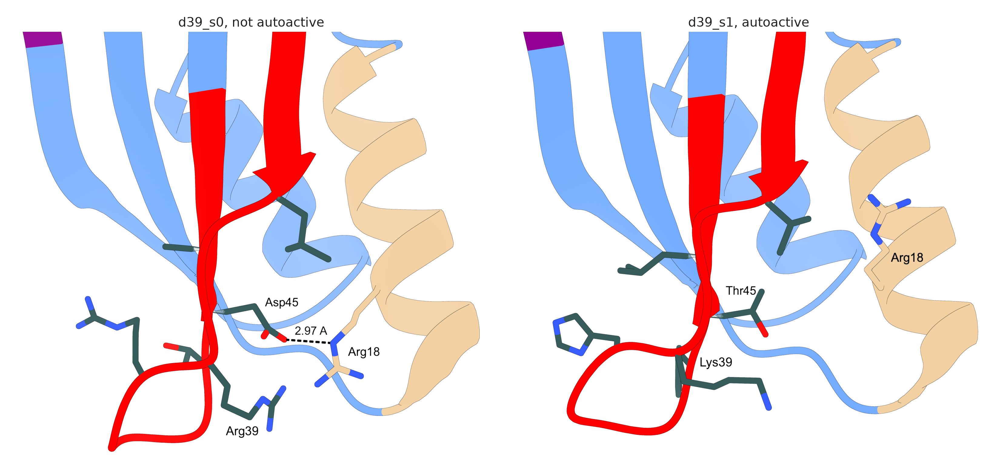

=== d39_s0 (cold start, not autoactive) ===
res aa eff A body A relSASA note
36 LEU 8.25 3.75 18.6% packs on HMA body; buried
39 ARG 7.17 2.36 23.7% packs on HMA body; partly buried; BURIED CHARGE, nearest body polar 2.36 A
40 ARG 2.67 3.46 28.2% contacts effector; packs on HMA body; partly buried; BURIED CHARGE, nearest body polar 4.41 A
44 THR 7.93 3.54 9.1% packs on HMA body; buried
45 ASP 8.69 2.97 2.2% packs on HMA body; buried; BURIED CHARGE, nearest body polar 2.97 A
46 ALA 6.13 4.08 8.4% buried
=== d39_s1 (cold start, autoactive) ===
res aa eff A body A relSASA note
36 VAL 4.94 3.43 13.2% packs on HMA body; buried
39 LYS 7.76 5.64 50.4% solvent facing
40 HIS 3.77 3.74 21.2% contacts effector; packs on HMA body; partly buried; BURIED CHARGE, nearest body polar 3.99 A
44 TYR 9.86 3.51 23.8% packs on HMA body; partly buried
45 THR 7.89 3.46 6.6% packs on HMA body; buried
46 LEU 3.59 3.43 15.0% contacts effector; packs on HMA body; buried
d39_s0 against d39_s1, two sequences on one backbone
Date: 2/9/26
d39_s1 is autoactive, d39_s0 is flat, and both are ProteinMPNN sequences on the same RFdiffusion backbone. Their design region 2 is identical, so every difference is one of six substitutions in design region 1.
Structures used. Both are cold-start predictions, which carry no negative-steering mutations, because the ordered constructs carried none either. d39_s1’s cold start places the effector wrongly, at 28.86 Å, but its receptor is predicted well (independent receptor RMSD 0.904 Å) and the effector is hidden throughout, so it is the right choice for a domain-only comparison. Seed 1 is used as the median of its three seeds.
An earlier version of this analysis used d39_s1’s reverted prediction, which carries A26R and D32K. That showed helix A displaced by 2.41 Å, but A26R is the last residue of helix A, so the shift was caused by the steering mutations and not by the designed sequence. It is absent from all three cold-start seeds.
Regenerate with:
cd analyses/12-d39-sequence-pair
ChimeraX scene_for_positioning.cxc # GUI: no OpenGL under --nogui on macOS
# position by hand, then: save positioned.cxs and write renders/
ChimeraX capture_positioned.cxc
python3 build_thesis_panels.py
python3 environment_of_differences.pyThe two structures are the same
Superposed on the receptor against the wild type:
| helix A 14-26 | helix B 53-63 | whole scaffold | |
|---|---|---|---|
| d39_s0 | 0.75 Å | 0.18 Å | 1.34 Å |
| d39_s1 | 0.81 Å | 0.41 Å | 1.64 Å |
- The two designs agree with each other to 0.71 Å over all 81 Cα, and helix A sits in the same place in both. The prediction offers no backbone signal that would mark d39_s1 as the autoactive one.
- d39_s1 is the less confident model throughout, mean pLDDT 88.3 against 92.9, so this is a comparison between two models of unequal confidence.
Where the six differences point
- Two of the six face the effector, positions 40 and 46. The other four face back onto the domain body, so only those can perturb the domain itself.
- Only two helix A residues are contacted by those four at all, Arg18 and Met22. Met22 is engaged in both designs and unchanged.
Arg18 loses both its partners

Closest approach from the Arg18 guanidinium:
| partner | distance | |
|---|---|---|
| wild type | Asn15 OD1 | 2.98 Å |
| wild type | Leu40 O, Arg41 O (backbone) | 3.43, 3.42 Å |
| d39_s0 | Asp45 OD2 | 2.97 Å |
| d39_s0 | Arg39 NH2 | 2.68 Å |
| d39_s1 | Val36 CG2 | 3.43 Å |
| d39_s1 | nearest polar atom, Ser19 OG | 4.83 Å |
- In d39_s1 the guanidinium has no hydrogen-bond partner at all. Both of d39_s0’s partners are substituted away, Asp45 to Thr45 and Arg39 to Lys39, and the side chain falls back against the hydrophobic face of its own helix.
- d39_s0 has its own oddity, two guanidinium nitrogens 2.68 Å apart, which is repulsive. Unusual geometry alone does not separate autoactive from flat.
What this does not show
- These are independent Boltz-2 predictions, not one structure relaxing, and side-chain rotamers are the least reliable part of a predicted model. A charged side chain with nothing to bind is exactly where the predictor is guessing.
- One autoactive design, and only the HMA is modelled, so the surfaces that determine signalling with Pikp-2 are absent.